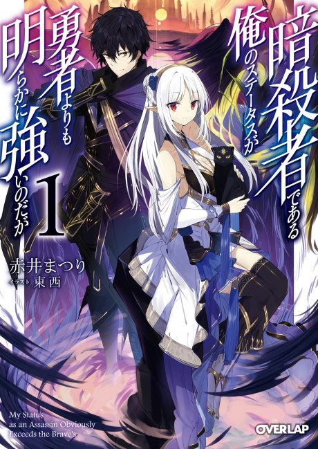

My Status as an Assassin Obviously Exceeds the Hero’s
暗殺者である俺のステータスが 勇者よりも明らかに強いのだが
Akira is summoned to another world as an assassin, a supposedly minor class, but his stats exceed the hero's.
After the anime, read the light novel from Volume 3.
6.6AniList score
—Animeter, no votes yet
12episodes
Rate it or report where you stopped
Anime finished. Where does the story go next?
Start at Volume3
The 12-episode anime covers the first two volumes, so start at volume 3. The light novel is still ongoing.
12ongoing
Season 1Start reading here
More like My Status as an Assassin Obviously Exceeds the Hero’s
 Manga Vol. 157.6
Manga Vol. 157.6
 Original6.0
Original6.0
 Unclear6.8
Unclear6.8
 Manga Vol. 117.7
Manga Vol. 117.7
 Manga Ch. 819.1
Manga Ch. 819.1
 Unclear6.4
Unclear6.4
 Manga Vol. 27.2
Manga Vol. 27.2
 Unclear6.2
Unclear6.2
 Unclear7.3
Unclear7.3
 Unclear7.6
Unclear7.6
 Unclear7.0
Unclear7.0
 Unclear6.9
Unclear6.9